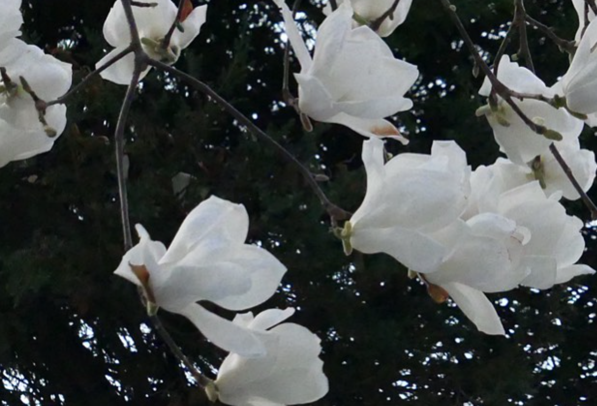

백목련
엄마는 이른 봄 가장 먼저 피는 백목련이 좋다고 한다. 겨울을 겪지 않으면 꽃을 피우지 못하는 것까지 사랑스럽다고. 색은 또 얼마나 우아하냐고. 매해 봄마다 목련을 향한 고백을 듣고 자라 그런지, 탐스러운 백목련을 보면 예쁘게 찍어 엄마께 보내드리곤 하는데 그 고운 자태와 색을 고스란히 담아내는 게 쉽지가 않다.

엄마는 이른 봄 가장 먼저 피는 백목련이 좋다고 한다. 겨울을 겪지 않으면 꽃을 피우지 못하는 것까지 사랑스럽다고. 색은 또 얼마나 우아하냐고. 매해 봄마다 목련을 향한 고백을 듣고 자라 그런지, 탐스러운 백목련을 보면 예쁘게 찍어 엄마께 보내드리곤 하는데 그 고운 자태와 색을 고스란히 담아내는 게 쉽지가 않다.
